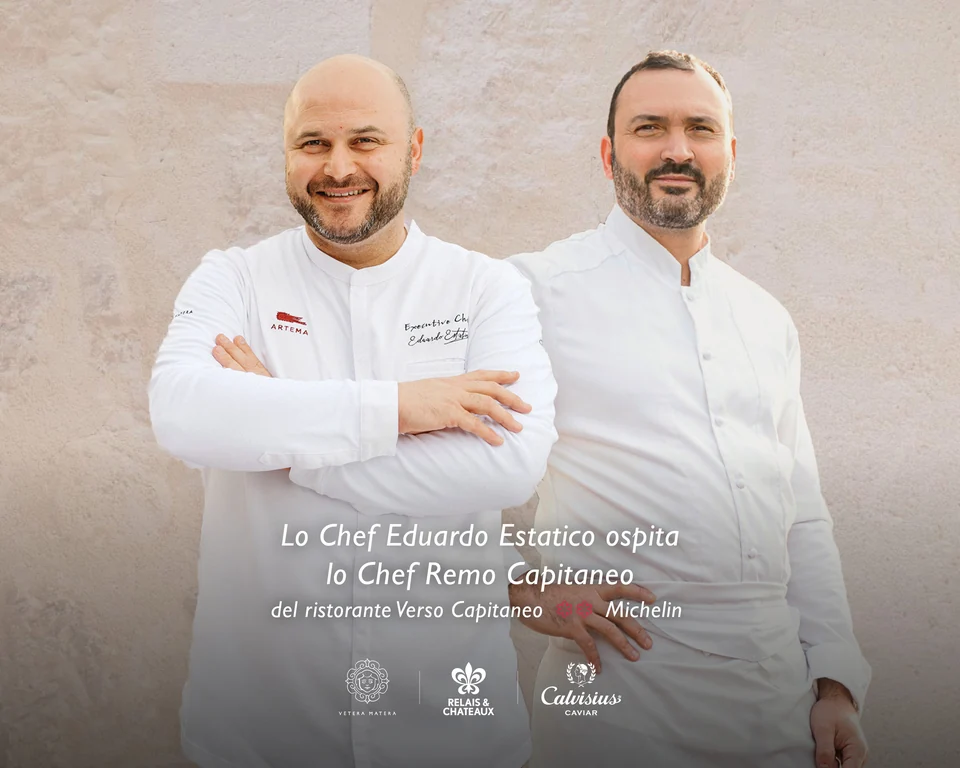

Zest & Friends: il dialogo tra Ischia e Sorrento.
Domenico Iavarone e Nino Di Costanzo, due percorsi della cucina campana alla stessa tavola.
Leggi la storia: Zest & Friends: il dialogo tra Ischia e Sorrento.Be Marketing Group
Be Marketing Group
Eventi, incontri e storie dai luoghi dell’ospitalità.
Dal mondo dei nostri clienti
Domenico Iavarone e Nino Di Costanzo, due percorsi della cucina campana alla stessa tavola.
Leggi la storia: Zest & Friends: il dialogo tra Ischia e Sorrento.
Eduardo Estatico e Remo Capitaneo ad Artema, per l’appuntamento conclusivo di GESTI 2026.
Leggi la storia: GESTI: le radici, nuovi incontri.